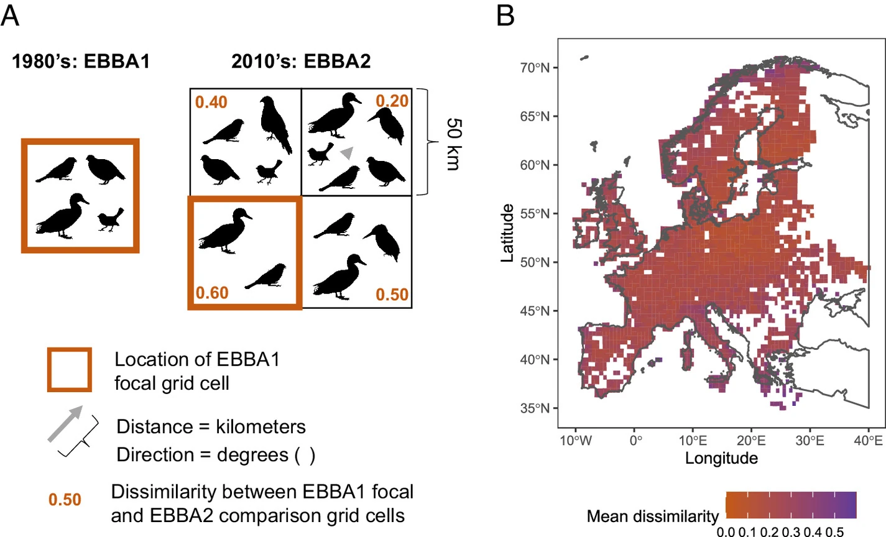
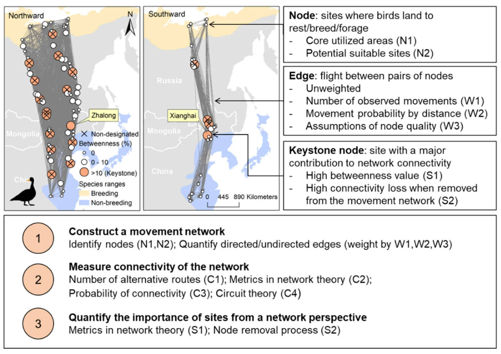
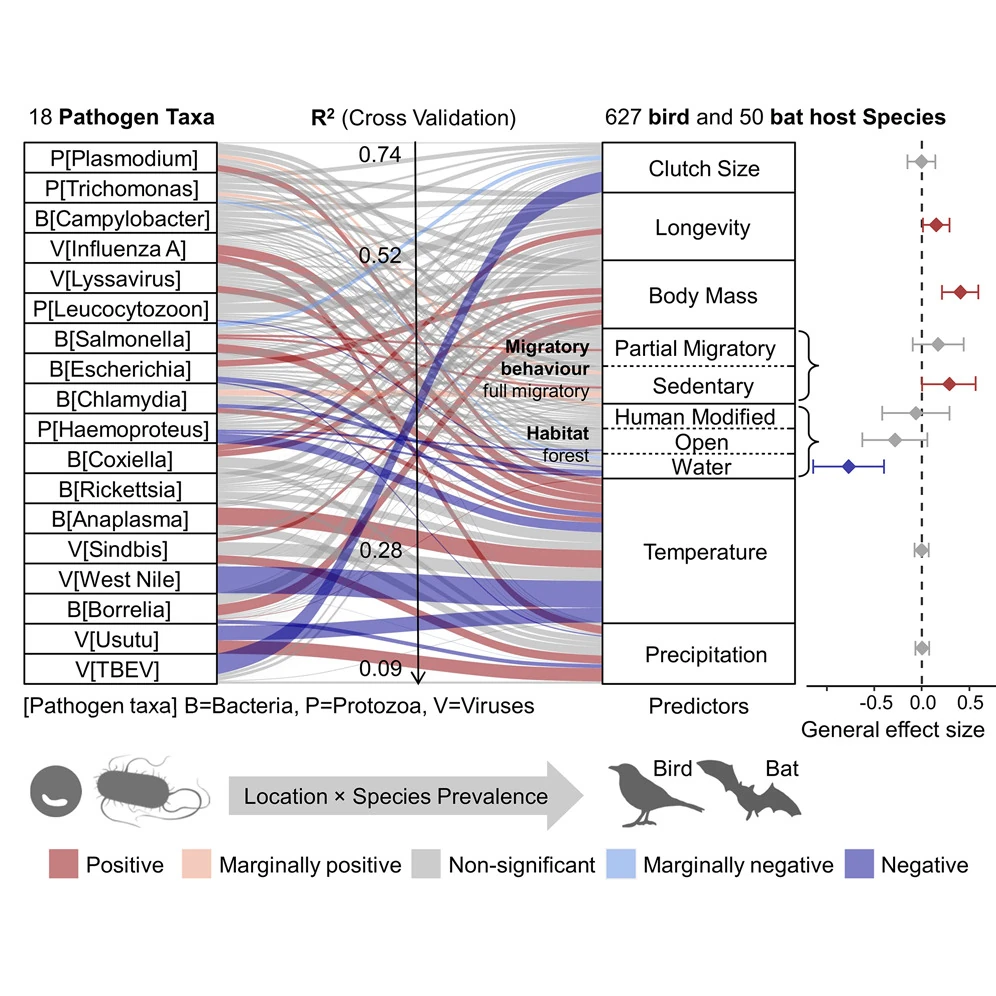

Senior Research
Scientist
Nature Solutions Unit
Melody Lab — Macro-spatial EcoLOgical DYnamics
I study biodiversity change, ecological connectivity and wildlife disease risks across space and time.
Explore my researchNature Solutions Unit
Global Change Ecology
Patterns across space and time.

Connectivity and spatial prioritization.

Mapping and anticipating zoonotic disease risks.

Visiting Researcher at the Finnish Museum of Natural History, University of Helsinki, following the postdoctoral appointment that ended in May 2025.
Fellow for the second Global Assessment of Biodiversity and Ecosystem Services of the Intergovernmental Science-Policy Platform on Biodiversity and Ecosystem Services.
Contributing to decisions on grant applications, the annual budget and strategic aims, with attention to the needs of the ecological community.
Associate Editor of Journal of Applied Ecology.
Online ISSN: 1365-2664
Print ISSN: 0021-8901